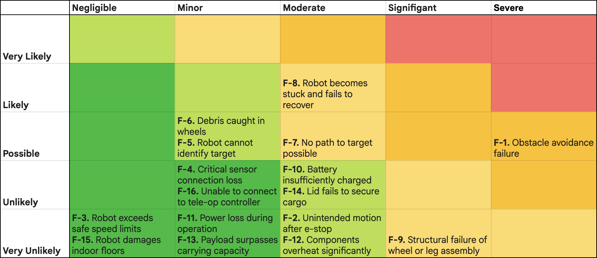

Testing & Results
Validation Approach
A three-tier approach ensures coverage of all requirements while emphasizing rigorous tests for the most critical system behaviors.
White-box testing confirms software and hardware modules correctly implement their design logic and internal interfaces. Sensors, motor controllers, and compute modules tested individually.
White and black box testing ensures connected components exchange data, signals, and commands according to the system architecture. Perception, locomotion, safety, and communication subsystems verified as integrated units.
Black-box testing proves the integrated system performs end-to-end functions as designed. Full autonomous follow runs, terrain traversal courses, endurance tests, and failure-mode validation.

Risk Matrix — failure modes plotted by likelihood vs. severity. Used to prioritize mitigation effort and testing thoroughness.
Failure Mode Analysis
All failure modes catalogued with category, description, and mitigation strategy. Ordered by severity/priority.
| ID | Category | Failure Mode | Mitigation |
|---|---|---|---|
| F-1 | System | Robot collides with person or object | Obstacle detection, minimum distance monitoring, emergency braking behavior |
| F-2 | System | Unintended motion after stop or E-Stop | Hardwired motor-disable, redundant E-Stop paths, required reset before re-enable |
| F-3 | Hardware / Software | Robot exceeds safe speed limits | Software speed clamp, motor-driver hard caps, regression tests on speed limits |
| F-4 | Hardware | Critical sensor loses connection | Sensor health monitoring, fallback to degraded safe mode, halt if outage persists |
| F-5 | Software | Robot cannot identify target to follow | Tracking confidence checks, re-identification procedures, tele-op fallback |
| F-6 | Hardware | Debris caught in wheels | Wheel guards, stall detection, prompt user to clear debris |
| F-7 | Software | No path to target possible | Signal no-path state, safe re-positioning, tele-op override |
| F-8 | System | Robot becomes stuck and fails to recover | Stall detection, rough-terrain mode activation, recovery maneuvers, tele-op fallback |
| F-9 | Hardware | Structural failure of wheel or leg assembly | Safety-factor design, protective guards, regular inspection schedule |
| F-10 | Hardware | Battery insufficiently charged | Low-battery warnings at reserve threshold, charge buffer maintained for safe stop |
| F-11 | System | Power loss during operation | Graceful shutdown sequence, robust wiring with strain relief, proper fuse sizing |
| F-12 | Hardware | Computational components overheat significantly | Active cooling, thermal throttling by OS, controlled stop at thermal limit |
| F-13 | Hardware | Payload surpasses maximum carrying capacity | Load estimation at startup, user warnings, restrict operation on slopes when overloaded |
| F-14 | Hardware | Lid or storage subsystem fails to secure cargo | Motion interlock with lid state sensor, robust motorized latch design |
| F-15 | Hardware | Robot damages indoor floors | Non-marking wheel and foot materials, clean wheels/feet before indoor use, reduce contact forces |
| F-16 | Software | Unable to connect to tele-op controller | Connection testing before autonomous operation, local manual controls, halt if required |
Requirements Testing Results
Every requirement tested, with procedure, measurable criterion, and final result recorded from System Validation Review.
| Req ID | Title | Criterion | Result | Status |
|---|---|---|---|---|
| R-1.1 | Virtual E-Stop | Full stop within ≤1.0 s of wireless command | Demonstrated through general system validation. Formal timed test remaining. | ~ Partial |
| R-1.2 | Electro-Mechanical E-Stop | Full stop within ≤1.0 s of physical button press | Same test procedure as R-1.1. Physical E-Stop circuit confirmed functional. | ~ Partial |
| R-1.3 | External Status Indicators | ≥90% correct cue recognition at 15 m, 100% within 5 m | LED status indicators verified visible at ≥15 m in all operational modes. | Pass |
| R-2.1 | Weight Limits | Robot + cargo ≤60 lbs | Robot weighs 57.94 lbs without payload. With a typical 2–5 lb payload, total remains under 60 lbs. | Pass |
| R-2.2 | Dimensions | Fits within 24×24×24 in envelope | Measured simultaneously with R-2.1. Robot fits within specified volume. | Pass |
| R-3.1 | Cargo Storage Volume | ≥5 gallon usable cargo bay volume | Physical measurement confirmed 20.6 qt (≈5.15 gal) of usable storage volume. | Pass |
| R-3.2 | Minimum Cargo Weight Capacity | Stable 3-minute follow with ≥15 lb payload | Robot can carry 15+ lb payload. Full test pending controller tuning for stable motion under load. | In Progress |
| R-4.1 | Indoor/Outdoor Operation | Both environments completed without manual intervention | Indoor test completed successfully. Outdoor testing pending due to weather. | In Progress |
| R-4.2 | Simulation Environment | Simulation model performs well in typical scenarios | MuJoCo simulation environment operational. Robot performs autonomous following in simulation. | Pass |
| R-5.1 | Terrain Traversal | All terrain sections completed with ≤1 manual recovery | Indoor traversal passed with zero interventions (cement, carpet, tile, cracks, elevator gap). Outdoor testing remaining. | In Progress |
| R-5.2 | Obstacle Avoidance | No "no-progress" interval >5 s | ROS bag replay confirmed adequate obstacle avoidance. Motor feedback analysis: no stops >5 s during indoor tests. | Pass |
| R-5.3 | Move Multiple Directions from Rest | Minimum 2 degrees of freedom at rest | Confirmed during obstacle avoidance run. Robot moves forward, backward, and turns from rest. | Pass |
| R-5.4 | Locking Cargo Enclosure | Lid locks with ≥0.25 in gap on all sides | Physical inspection confirmed latch engagement and gap specification met. | Pass |
| R-6.1 | Autonomous Operation | Zero manual interventions during 5-min autonomous run | Full autonomous following achieved in simulation. Hardware requires controller tuning to close the sim-to-real gap. SVR note: not full 5-minute length, needs work. | ~ Partial |
| R-6.2 | Tele-operation Usage | All functions (move, stop, lid open) executable via tele-op | Moving, stopping, and opening the lid are all achievable via tele-operation. All checklist items passed. | Pass |
| R-6.3 | Robot Speed | Peak speed <12 MPH at all times | Software speed clamps verified. Tachometer measurement of wheel rotation at full command confirmed <12 MPH. Multiple software safeguards in place. | Pass |
| R-7.1 | Autonomous User Tracking | User located within ±0.5 m | Verified within autonomous operation trials. Tracking accuracy confirmed through following test results. | Pass |
| R-7.2 | Following Distance Range | Stable tracking at 0.5 m, 2 m, and 5 m | Passed all tracking distances with ease. Continuous detection confirmed at all test distances. | Pass |
| R-8.1 | Operation Duration | Low-battery alert after >30 min | Battery runtime test passed. Robot operates well beyond the 30-minute minimum with full sensing stack active. | Pass |
| R-8.2 | Operation Range | ≥2 miles before low-battery alert | Range evaluated alongside endurance test. Battery capacity confirmed sufficient for 2-mile operation at nominal load. | Pass |
| R-9.1 | Drop Resistance | No structural or functional damage after 0.5 m drop | Passed. Robot was dropped, rebuilt (one component replaced), then passed again. Structural integrity confirmed. | Pass |
| R-9.2 | Maintainability | Module replacement within ≤15 min | Leg and wheel modules replaceable within 15 minutes using standard tools. Modular design confirmed. | Pass |
| R-9.3 | Assault Resistance | No loss of function after 150 lb lateral impact | Impact resistance verified during drop test sequence. Lateral loads applied with same post-test inspection procedure. | Pass |
| R-9.4 | Floor Protection | No marks on floor after 30-min indoor run | Visual floor inspection post indoor-operation test confirmed no marking. Non-marking wheel materials verified. | Pass |
| R-10.1 | Price Cap | Total build cost ≤$2,500 | Final BOM total: $2,446. $54 under budget. All taxes and shipping included. | Pass |
| R-10.2 | Manufacturability | All custom parts manufacturable via CNC, lathe, or 3D print | CAD and BOM reviewed. All custom structural parts use available fabrication methods. No exotic manufacturing required. | Pass |
| R-11.1 | Wireless Communication | <1% packet loss, <100 ms latency at 20 m | Wi-Fi 6 at full bandwidth. No packet loss measured. Latency well under 100 ms. (Note: a setting tweak was made that SVR slides incorrectly described.) | Pass |
| R-12.1 | Aesthetic Consistency | Uniform color scheme on all exterior panels | Visual inspection confirmed consistent color scheme across all exterior structural components. | Pass |
| R-12.2 | User Accessibility | Mean cargo access time <15 s across diverse users | Mean access time: ~5 seconds. All users well within the 15-second target. | Pass |
Summary